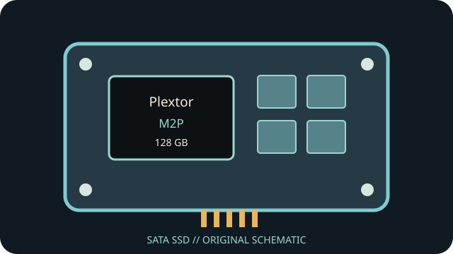

[ INDIVIDUAL COMPONENT // SATA SSD ]
Plextor M2P 128 GB
Capacity- and part-specific archival record. Performance and construction notes are tied to the cited model documentation; do not generalize them across revisions.

IDENTIFICATION: Match exact part number PX-128M2P, capacity and revision to the physical label. OEM and regional suffixes can differ.
Specifications
| Manufacturer / model / SKU | Plextor M2P — PX-128M2P |
|---|---|
| Capacity | 128 GB |
| Generation | 2011 performance SATA SSD generation |
| Form factor | 2.5-inch |
| SATA generation / interface | SATA 6 Gb/s (SATA III); compatible with lower SATA link rates |
| Controller / NAND / performance / endurance | Marvell 88SS9174-BKK2 controller, 512 MB DRAM cache and Toshiba Toggle MLC NAND are specified for the M2P family. The 128 GB version is rated up to 500 MB/s sequential read and 320 MB/s sequential write. Verify board/firmware revision; endurance rating is not reproduced without a primary capacity table. |
| TRIM / firmware | TRIM support is documented for compatible OS/firmware combinations; ATA command pass-through is host/driver dependent. Firmware 1.09 is reported for the family, but confirm exact revision and use only a matching Plextor updater. |
| Host compatibility | 2.5-inch SATA data/power. A SATA 3 Gb/s host will negotiate down and constrain throughput. Confirm host AHCI/BIOS boot support; firmware tools may not work through USB bridges or modern unsupported operating systems. |
Age-related handling & preservation
- Before use, record the label, serial, firmware, SMART health attributes, host/controller and a read-only data/health snapshot; keep verified backups.
- Peak transfer rates and historical endurance ratings do not guarantee remaining life, powered-off retention or recovery after controller failure. Inspect for corrosion, damaged connectors and prior repair.
- Firmware utilities, manuals, warranty coverage and host drivers may be discontinued. Do not update, secure-erase or cross-flash until the full part number/revision and a verified backup are established.
- Check OS TRIM/SMART support directly; bridge, RAID, driver and BIOS behavior can block or alter these features.
Manufacturer / manual sources
- Plextor / Lite-On M2P 128 GB datasheet (archived)Archived product datasheet for the M2P 128 GB capacity; verify model marking and capacity-specific figures.
- Plextor storage manuals catalogueProduct-manual archive index for installation and product literature; identify the PX-M2P document where available.
Sources are HTTPS manufacturer product/support pages or product manuals. Match the complete drive label and document revision before applying family-level information to an individual unit.